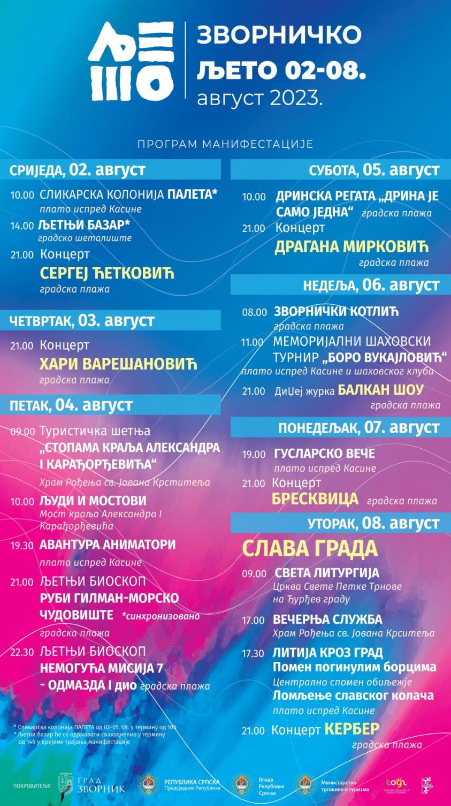

Zvornicko leto
Šta je Zvorničko leto?
Tip: Najveća sedmodnevna kulturno-zabavna manifestacija Kratak opis: Niz kulturnih manifestacija, sajam knjiga, izložba fotografija, mini-maraton, izložba rukotvorina, slikarska kolonija, rafting, zvornički kotlić, nastupi poznatih javnih ličnosti iz svijeta muzika, glume, pisane riječi itd, a završava se obilježavanjem krsne slave grada Svete Petke Trnove, prigodnim vjerskim programom Pokrovitelj-organizator: Grad Zvornik Učesnici: poznate ličnosti, glumci, pjevači,književnici kao i naši sugrađani, djeca, ribolovci, ljubitelji raftinga, mnogobrojni zvornički stvaraoci Datum, vrijeme i mjesto: 02.08.-08.08, Gradska plaža i druge lokacije u gradu, park, Narodana biblioteka, Kasina, glavna ulica Svetog Save Tradicija: prvi put održana 2001. god i okuplja veliki broj posjetilaca, 30 000-40 000 posjetilaca.
